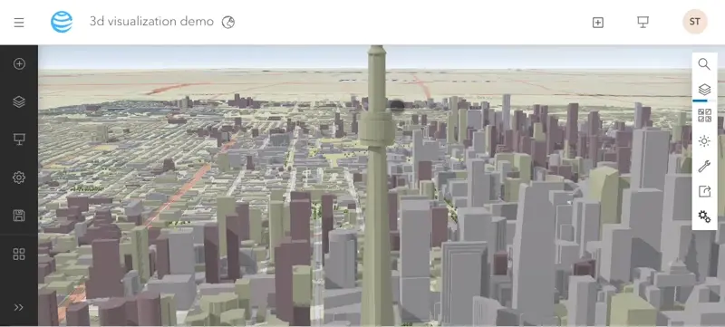

ArcGIS Scene Viewer
ArcGIS Scene Viewer is a web-based application that allows users to explore and interact with 3D geographic information directly in their web browsers.
Scene Viewer lets users visualize terrain, buildings, and other geographic features.
It provides tools for navigation, measurement, and analysis, empowering users to gain insights and make decisions based on their 3D data.
As part of the ArcGIS Online platform, Scene Viewer simplifies access and sharing of 3D content with others.
| Advantages |
Disadvantages |
| Scene viewer has a user friendly interface. |
Rendering time for 3D visualization may vary depending on the complexity of the dataset used. |
| Scene viewer provides powerful analytical capabilities for spatial analysis, including line of sight, slice, measuring distance, area, and height in 3D space. |
|
| Scene viewer displays high-quality 3D visualizations with lighting, shadows, and weather conditions, providing users with a realistic visual experience. |
|
| Users can import data from various sources or access Esri's extensive collection of curated datasets. |
|
Process
First, I logged in to my ArcGIS account and open Scene Viewer.
Then, I started a new scene and picked a basemap that fits the best for my plan.
Next, I added open street map 3d building and open street map 3d trees data layers from Esri living atlas to the map.
After that, I adjusted the view to get the perfect angle and zoom level.
Then I added slides to show different seasons, played with measurement tools.
I also changed colors and symbols to make the map look nice, and even add pop-ups to show extra information when someone clicks on something.
Finally, when everything looked good, I saved my work and share it with others.
Other Explorations
Mapbox

Mapbox is a versatile platform helps users to create custom maps and location-based applications.
It offers a wide range of tools and services for designing, visualizing, and analyzing spatial data.
Whether you're building interactive maps for websites, mobile apps, or data visualization projects, Mapbox provides the capabilities you need.
It allows you to customize map styles, add geospatial data layers, and incorporate advanced features like real-time updates.
Additionally, Mapbox offers SDKs and APIs for developers to seamlessly integrate mapping functionality into their applications.
| Advantages |
Disadvantages |
| Mapbox offers user-friendly interaction with 3D maps, including zooming, rotating, and tilting, providing a more dynamic experience. |
Compared to ArcGIS products, Mapbox has relatively limited analytical capabilities. |
| Mapbox is well-suited for integrating 3D maps into custom web and mobile applications. |
Mapbox has a relatively short learning curve for beginners. |
| Mapbox allows users to utilize a wide range of data formats and sources. |
|
Process
First, I sign in to my Mapbox account and open the Mapbox Studio application.
Then, I created a new project and select the 3D map style you want to use as a base.
Next, I used the existing building layer in the mapbox studio. one can add their own data layer by uploading their data (MBTiles, KML, GPX, Geojson, Shapefile, CSV files).
Then I customized the appearance of the layers by adjusting colors, symbols, and labels.
After that, I changed the building polygon to 3D buildings by changing the building layers type from fill to the fill extrusion (an extrusion 3d polygon) under select data tab and under its style tab filled the height formula: height.
Once I was happy with my 3D map, I published it.
One can share it with others by embedding it on websites or integrating it into mobile apps.
What Didn't Work
What didnt work in the mapbox was the fixed zooming extent. Where the 3D buildings layer were only visible after one extent.
I tried to see if I can represent the 3D terrain features in the map box.
I found that while I can adjust the terrain elevation by giving the height and styling it by data condition,
but still could not show the complex terrain features properly.
Dashboard

ArcGIS Dashboard is a tool that lets users create dynamic, interactive displays of their data.
It can create customized dashboards using maps, charts, graphs, and other visual elements to monitor trends, track performance, and communicate insights.
ArcGIS Dashboard helps users make informed decisions by presenting data in a clear and intuitive way.
Process
First, I logged in to my ArcGIS Online account and navigate to the Dashboard section.
Then, I created a new dashboard project and selected a layout that includes a 3D map component.
Next, I added my 3D map layers by connecting to existing web maps.
Later I customized the appearances of the map by adjusting symbology, labels, and basemaps to best represent my data.
I also configured the map settings where I enabled the features like pop-up, legends, basemap switcher, search, find my location pan/rotate and zoom in/ out.
Additionally, I incorporated interactive elements like filters and selectors to allow users to explore the 3D map dynamically.
We can also modify the appearance od the header tab by adding logos.
Finally, once my dashboard was complete. I published my dashboard and share it with others.
Experience Builder

ArcGIS Experience Builder is a user-friendly web application that empowers users to create custom web experiences without coding.
It integrates seamlessly with ArcGIS Online, allowing users to incorporate spatial data and services directly into their web apps.
With drag-and-drop functionality and a wide range of templates and widgets,
Experience Builder helps users design interactive and engaging web experiences.
This versatile tool is ideal for storytelling, data visualization, and more.
| Advantages |
Disadvantages |
| Experience Builder provides pre-built templates, widgets, and components that can be customized through a visual interface. Therefore, it requires no coding. |
Experience Builder has the steepest learning curve. Users may require more time and effort to understand the tool's interface, functionality, and workflow. |
| Experience Builder helps users create interactive 3D experiences with various features. |
Experience Builder has limited data integration with different data formats and sources. Users may encounter challenges when trying to import external data into their 3D experiences. |
Process
First, I logged in to my ArcGIS Online account and opened Experience Builder.
Then, I started a new project and choose a blank layout.
Next, I added my 3D spatial data to the map widget by connecting through URL.
You can customize the appearance of the map by adjusting symbology, labels, and basemaps to suit your needs.
Experience Builder offers various tools for adding additional elements like text, images, and buttons to enhance your 3D map.
I personally used menu widgets and buttons to create my Experience Builder.
Once I finished designing and previewing.
I published my project and shared it with others.